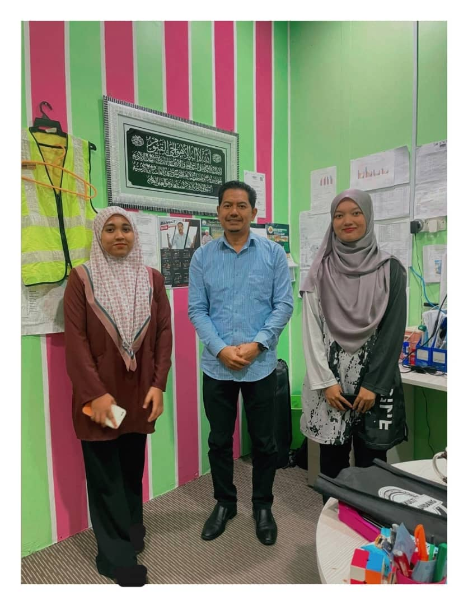

My Work Experience
Institut Memandu Sinar
While working at Institut Memandu Sinar in Padang Serai, Kedah, I gained important hands-on experience in information management. I actively participated in information system management, which ensured data accuracy and accessibility. I also improved my organizational abilities by efficiently arranging and managing physical and digital materials. In addition, I helped with different administrative responsibilities, such as document preparation and recording, to ensure the institution's seamless running. This experience not only improved my technical skills, but it also honed my ability to contribute both independently and helpfully within a team.
Picture when I'm at work place

I and Syahirah with the manager, IMSinar.